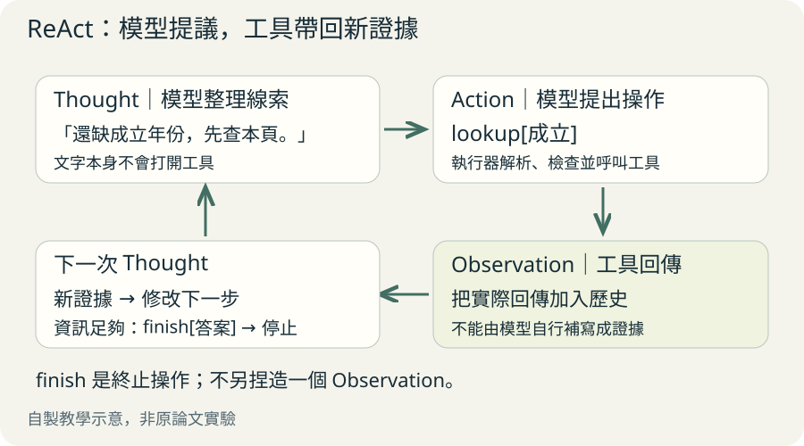
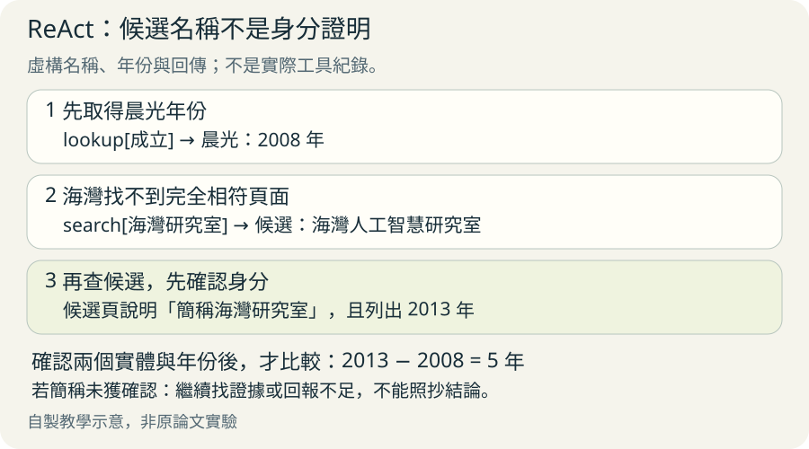
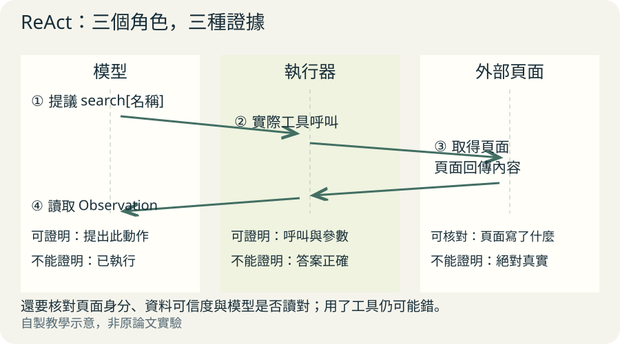

想像你要在圖書館找一本書。你先猜它在科學區，走過去卻看不到，於是查目錄，再換到另一排。ReAct 的點子也像這樣：先整理缺什麼線索，做一個動作，看見結果後再改下一步。
先分清楚「我猜」與「我看見」
語言模型可以寫出像答案的文字，卻可能記錯事情。讓它一直寫推理，也不能保證記憶裡的年份就是對的。ReAct 把模型寫的計畫、工具做的動作、外面回傳的資料接在一起，讓新線索能改變下一步。
Thought 是模型整理線索或說明下一步理由；Action 是要求工具做一個操作；Observation 是工具執行後真正回傳的內容。「我想去找書」不是「我已經找到書」。讀這種紀錄，要先找答案的證據從哪一行進來。
從缺少線索，到拿到證據

放大閱讀圖解 ↗ · 窄螢幕可在圖內左右滑動。

圖解文字說明
- 問題
哪間研究室成立較早？需要兩個年份。
- Thought
晨光的頁面有了，但還缺成立年份。
- Action
請工具在目前頁面 lookup[成立]。
- Observation
工具回傳：晨光於 2008 年成立。
- 更新下一步
記住已查到的年份，再找海灣；證據齊了才 finish。
小任務：兩間研究室，誰比較早成立？
以下名稱、年份與工具回傳全部虛構，是教學示意，不是論文實驗或真實查詢紀錄。任務是比較晨光研究室與海灣研究室的成立年份，並算出相差幾年。
我們提供三個工具：search 找名稱對應的頁面；lookup 在目前頁面找包含指定文字的下一句；finish 回答並停止。原論文知識任務的 search 會回傳實體頁開頭五句，找不到時提供相近名稱，並不是隨便問什麼都會回答的搜尋精靈。工具定義見原文第 3.1 節。
走完五步，讓每個年份都有來處
第一步先找晨光，因為比較需要兩個年份；第二步查「成立」，因為頁面開頭還沒給答案。第三步換查海灣，避免一直重複查已經找到的晨光。
第四步確認相近名稱是不是同一個研究室，不能看到名字相似就直接套用年份。第五步才比較 2008 與 2013，手算 2013 減 2008 等於 5，再回答。finish 代表結束，不需要額外編造工具回傳。
自編教學軌跡，名稱、年份與觀察均為虛構
Thought 1：需要兩個成立年份，先查晨光。
Action 1：search[晨光研究室]
Observation 1：找到頁面，開頭只有研究領域，沒有成立年份。
Thought 2：頁面已找對，接著找「成立」。
Action 2：lookup[成立]
Observation 2：晨光研究室於 2008 年成立。
Thought 3：已知晨光的年份，還缺海灣。
Action 3：search[海灣研究室]
Observation 3：無完全符合頁面；相近候選是海灣人工智慧研究室。
Thought 4：先確認候選名稱是不是同一個實體。
Action 4：search[海灣人工智慧研究室]
Observation 4：海灣人工智慧研究室，簡稱海灣研究室，於 2013 年成立。
Thought 5：兩個實體已確認；2008 早於 2013，相差 5 年。
Action 5：finish[晨光研究室較早，比海灣研究室早 5 年。]同樣查不到，下一步可以很不同

放大閱讀圖解 ↗ · 窄螢幕可在圖內左右滑動。

圖解文字說明
- 失敗：直接猜
找不到海灣研究室，就憑印象填 2013 年；年份沒有來源。
- 失敗：原地重跑
一再搜尋相同名稱，只拿到相同候選；沒有新資訊。
- 修復：換查並確認
搜尋海灣人工智慧研究室，讀到「簡稱海灣研究室」，才採用成立年份。
- 仍不足：停下說明
若候選頁沒有身分證據，就回報仍未確認，不能直接比較。
找不到時，怎樣才算修好？
搜尋沒找到，不等於問題沒有答案，也不等於模型可以自己補一個答案。在例子中，修復是換查相近候選，然後用「簡稱」這條證據確認身分。若頁面沒有這條證據，就還不能接著比較年份。
停止也要有條件。證據齊了可以回答；工具壞了、反覆拿到相同內容或步數用完，就應回報還缺什麼。這些是本頁提出的工程規則，不是論文保證模型自然會做到的行為。
工具資料也可能錯，模型也可能誤讀。寫出 Thought 方便人檢查理由，卻不能單靠文字證明模型內部真的照這個理由運算。最可靠的檢查仍是把主張逐一對回實際回傳。
三張小紙條，各自證明什麼？

放大閱讀圖解 ↗ · 窄螢幕可在圖內左右滑動。

圖解文字說明
- 模型建議：想去找書
「請搜尋晨光研究室」只證明模型提出這個動作，不能證明工具已執行。
- 執行器操作：真的去查
執行紀錄可確認呼叫了哪個工具、用了什麼參數；還不能保證找到正確答案。
- 外部回傳：帶回紙條
頁面寫著「2008 年成立」是可核對的資料；仍需確認頁面身分，不能直接當作絕對真相。
有工具，不代表有付款權限
原論文的購物研究環境不會真的付款，Wikipedia 工具也不能修改頁面。這是原文 Ethics Statement 明說的實驗邊界。
若把相同流程接到真實帳戶，執行工具的程式仍要檢查可用操作與參數。商品頁寫「現在付款」只是外部資料，不能變成使用者授權。這是本頁的實作延伸；ReAct 的文字格式本身沒有替你設定權限。
技術細節：提示範例和訓練是兩回事
主要實驗使用凍結參數的 PaLM-540B 語言模型。作者把人寫的完整軌跡放進 prompt，也就是交給模型的提示輸入，讓模型參照少量範例產生新步驟。這叫 few-shot prompting，解題當下沒有更新模型權重。方法見原文第 2 節。
微調是另一路實驗：作者使用 3,000 條答案正確的模型生成軌跡，訓練較小的 PaLM-8B 與 PaLM-62B。這才會改變模型權重，見第 3.2 節。不能把主要提示實驗說成每個任務都重新訓練了模型。
知識問答常讓 Thought、Action、Observation 密集交錯；長串決策動作之間，Thought 可以只在規劃或改計畫時出現。模型提出 action 之後，仍需控制程式真的呼叫工具，再把真實回傳放回紀錄。只有一段「你可以搜尋」的提示，不會自動長出搜尋能力。
桌上放範例，與練習後學會，是兩回事
- 提示：把範例放桌上
這次解題看幾個範例再做；主要實驗模型權重不變，改的是眼前讀到的內容。
- 微調：用練習調整本領
另一路實驗用 3,000 條答案正確的生成軌跡訓練較小模型；權重改變。
- 比較時別混在一起
都可產生推理與行動紀錄，但是否訓練、使用哪個模型不同；不能把效果都算成提示本身。
論文數字：哪裡有效，哪裡不能外推？
原文第 3.3 節表 1：在 PaLM-540B 提示實驗中，HotpotQA 的 ReAct 答案完全匹配率為 27.4%，CoT 為 29.4%；FEVER 分類準確率則為 60.9% 對 56.3%。CoT 是只生成逐步推理、沒有外部工具觀察的比較方法。這顯示 ReAct 沒有在每個任務都勝過 CoT，而且兩個任務使用不同指標。
原文第 4 節表 3：ALFWorld 文字家務環境中，ReAct 最佳提示試次成功率為 71%，六組提示平均為 57%。表 4：WebShop 購物環境中，ReAct 為 40.0%，Act 為 30.1%。Act 是移除 Thought、保留行動與觀察的比較方法。最佳試次不能當成平均成績。
這些是指定模型、提示、工具與測試集的結果，不能推成真實機器人或開放網路上的通用成功率。第 3.3 節記錄了無效搜尋與重複行動的失敗，第 6 節也指出複雜行動空間需要更多示範，而示範會占用有限輸入長度。
回原文，先看哪張圖？
先看圖 1：並排比較直接回答、只推理、只行動、ReAct 四種軌跡，注意每種方法少了什麼。接著讀第 2 節，確認 Thought 只更新脈絡，本身不改變外部環境。
再讀第 3.1 節的工具契約與第 3.2 節的提示、微調區別。讀第 3.3 節表 1 時，用「是否每個任務都贏」這個問題檢查自己的理解。
想自己實作，再看附錄 C 的提示與附錄 D 的完整軌跡；想知道失敗怎麼發生，看第 3.3 節與附錄 E.1。建議先做只有讀取功能的小流程，讓每個答案都能回指一條觀察。
原文與來源
此頁依下列固定快照編寫；教學例子與程式片段用來解釋方法，請回到原文確認研究設定與結果。